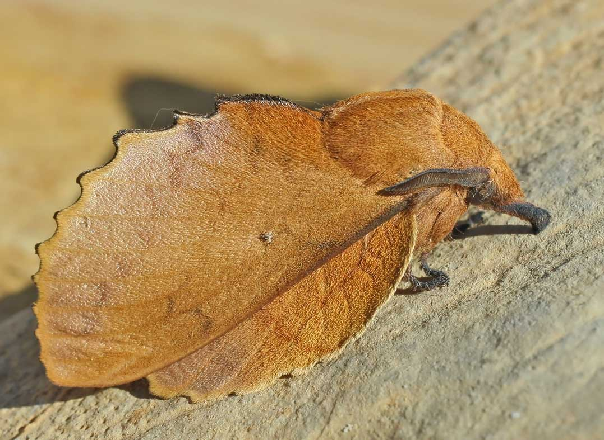

Su apariencia de hoja seca le permite confundirse con la vegetación y evitar ser detectada.
Como otras polillas, pasa por las etapas de huevo, oruga, pupa y adulto. Sus alas plegadas muestran el patrón que recuerda a una hoja seca.
Se encuentra en bosques densos, selvas tropicales y zonas arboladas de Europa y Asia.
¿Cómo se oculta?
El color y la forma de sus alas recuerdan a una hoja seca, un camuflaje visual que la integra en su entorno.
Sentidos
